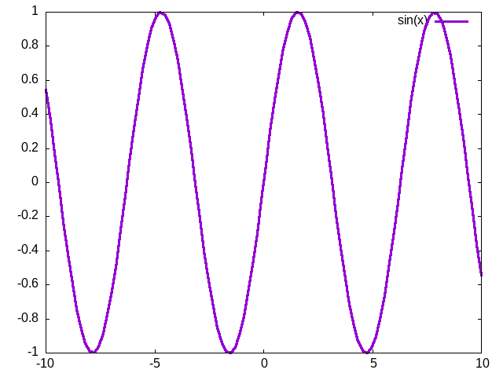
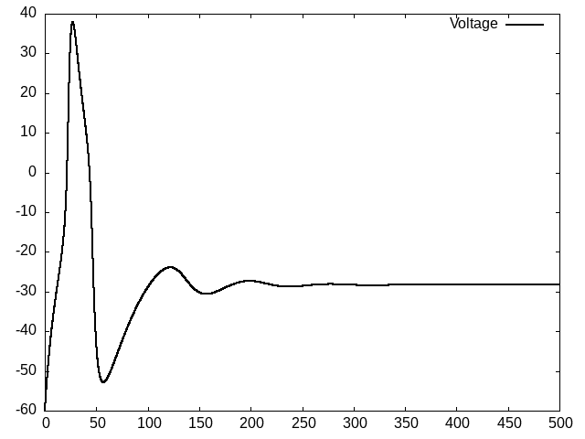
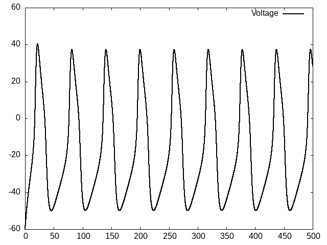
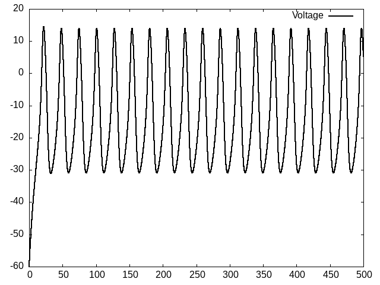
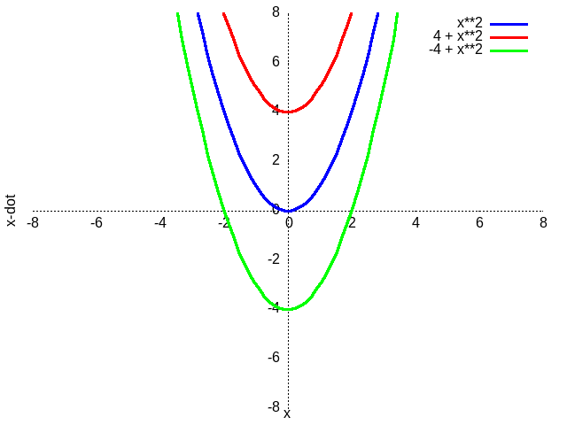
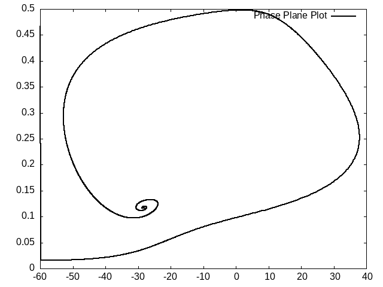
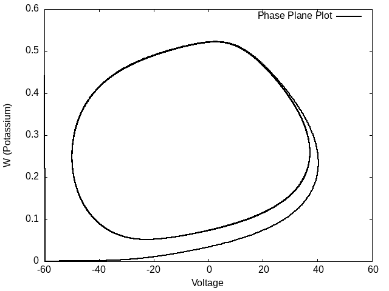

Dynamics and Information
1. Old Business
2. Warming Up class_questions
"What goes around, comes around." What does that mean?
Draw a simple diagram to capture your intution.
"The more things change the more they stay the same." What does that mean?
Draw a simple diagram to capture your intution.
- What is emergence?
- What is the dynamic content of the psychological terms: state and trait?
- Are mental representations dynamic?
3. Mathematical Tools For The Study of Change
Give an example of a cognitive or neural phenomenon for which you think the right way to think about it is about its dynamics?
If you feel that there is a need to incorporate they study of how things change in your area of interest, then you need the tools of Dynamical Systems.
3.1. Derivatives and Differential Equations
3.1.1. The Derivative
A principal theme that I have wanted to emphasize, and perhaps failed to fully demonstrate, is the mind, theory, math, code pathway. I feel we have talked about these individuall, but that I have not always been persuasive in establishing their continuity and interdependence. The mathematical concept at the heart of a science of change is the derivative. How something changes when something else changes. It is the ratio of the one quantity divided by the other. In high school this was \(\frac{\mbox{rise}}{\mbox{run}}\), but not everything is a line. How do we deal with curves? We do what we did with manifolds and pretend that if we only look in a small enough area the difference between our curve of interest and a concatentation of little teeny line segments is essentially the same. Formally, we shrink the size of the "run" above to be infinitesimal 1. \[\frac{d f(x)}{dx} = \lim_{x \rightarrow 0} \frac{f(x+\Delta) - f(x)}{(x + \Delta) - x}\].
3.1.2. A Differential Equation 2
It if includes a derivative it is a differential equation. \(\dot{y} = \cos{x}\) is a differential equation, but that can be solved by integration and is not what people usually mean. They usually mean something more like \(\dot{x} = \sin{x}\). What is the difference?
- Everybody knows what a sin wave is? How complicated can it be? class_discussion
Can you give a formula for \(t\) in terms of \(x\) that makes this statement true?
- Some Algebra
\begin{align*} \frac{dx}{dt} &= \sin{x} \\ \frac{dx}{\sin{x}} &= dt\\ \int{\csc{x} dx} &= \int{dt}\\ -\ln{|\csc{x} + \cot{x}|}+C &= t\\ \ln{\left| \frac{\csc{x_0} + \cot{x_0}}{\csc{x} + \cot{x}}\right|} &= t\\ \end{align*} - Some Geometry

Figure 1: "Plot of sin(x)"
- Answer some questions
- Suppose \(x_0 = \frac{\pi}{4}\). What happens as \(t \rightarrow \infty\)?
- What is the arbitrary of \(x(t)\) for any \(x_0\) as \(t \rightarrow \infty\)?
- Terminology
- Fixed point
- Where \(x(t)\) does not change. When is that?
- Phase Plot
- The evolution of \(f(x)\) starting from some \(x_0\) as \(t\) increases. What is your solution for \(\dot{x}(t)\) starting from some \(x_0\)? Just follow the trajectory on the graph and see where you end up. 3
3.1.3. Does Code Matter?
Have we seen any cases yet where the language we chose for implementing an algorithm or approaching a problem has had any impact on the transparency of the solution or facility with which we can see the implications of an algorithm? I think not. Mostly we have seen that different languages bring different practical benefits. But we have repeatedly seen where the ability to translate a mathematical statement into code for simulation brings insights that would have been hard to see from the formula alone. This is another case in point.
4. Examples from Neuroscience
4.1. Spiking Neuron Models
The best example I am aware of where people are using these models is in analyzing computational models of spiking. A good tutorial article is 3.
4.1.1. Morris Lecar Model
This model is similar to the Hodgkin-Huxley model, but focuses on two channel types: calcium and potassium. It was developed with an eye to explaining oscillatory activity.
Because it is two-dimensional (whereas the HH is four dimensional) it allows an easier representation of how things are dynamically evolving graphically, while having lots of interesting behaviors that are dependent on parameter settings. The equations for the model are found on the wikipedia page above or the code I wrote for these visualizations.
A basic version generates a spike much like the Hodgkin-Huxley model.

Figure 2: Action Potential with the Morris-Lecar Model (Hopf Settings)

Figure 3: Action Potential with the Morris-Lecar Model (Snic Settings)

Figure 4: Action Potential with the Morris-Lecar Model (Homoclinic Settings)
What is changing? Only two parameters: the V_4 and the φ. The current injection was the same for all three versions.
4.2. Bifurcations
Bifurcation is the name given to a qualitative change in the behavior of a dynamical model. Usually we are referring to changes in the number and variety of fixed points.

Figure 5: Plot of \(\dot{x} = r + x^2\) with three values of \(r\). What are the fixed points for each curve? Are they stable? How do they change as "r" changes?
4.3. Phase Plots and Nullclines

Figure 6: Phase plot with the Morris-Lecar Model (Hopf Settings). Does this neuron fire repetitively? How can you tell?

Figure 7: Phase plot with the Morris-Lecar Model (SNIC Settings). Does this neuron fire repetitively? How can you tell?
These plots take our voltage and plot it against the potassium current. This is a particular trajectory of our data as time progresses (both our voltage and potassium current are functions of, among other variables, time). You can think of these as sort of like one of the parabolas, and the collection of them like the collection of parabolas where the \(r\) of our parabolas is the combination of \(V_4\) and \(\phi\). A nullcline is where the derivative becomes zero. I don't have that nicely illustrated here, but it is another bit of the terminology it is well to have heard even if you don't remember it.
As I think the plots demonstrate, it is much easier to get a feel for what is going on by looking at the pictures. Since for many models of interest the behavior doesn't he have an analytical solution (like our simple \(\sin(x)\) did above) we have no choice but to visualize for understanding, and that requires coding. The question for us, in the context of this course, is whether the language matters? Is it merely practical convenience or would certain languages facilitate our understanding the math better or the implications of a particular model?
5. Final Question
All these examples were largely physical. How does this approach fit in with a desire to understand cognition? If I had found it sooner I would have had us all read this article [4] as it seems to advocate the idea that models must precede methods. And that it is such theories that we lack. I think this type of math is very underexploited in cognitive modelling compared to some of the other approaches we have covered.
6. Homework
I am of two minds. I think I would like everyone to start focusing on their projects, though I can come up with an exercise if requested or we can take another stab at isomap. But what I would like to do is to try and revive the discussion of the roll of particular programming languages in this process. Maybe everyone can try to find some example that particulary well demonstrates the power of their paradigm. Preferably cognitive, but fine if not as long as it shows off the unique features of the paradigm well. Thoughts?